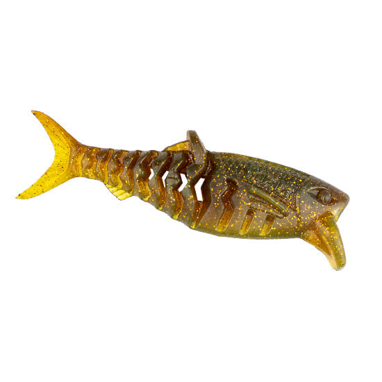
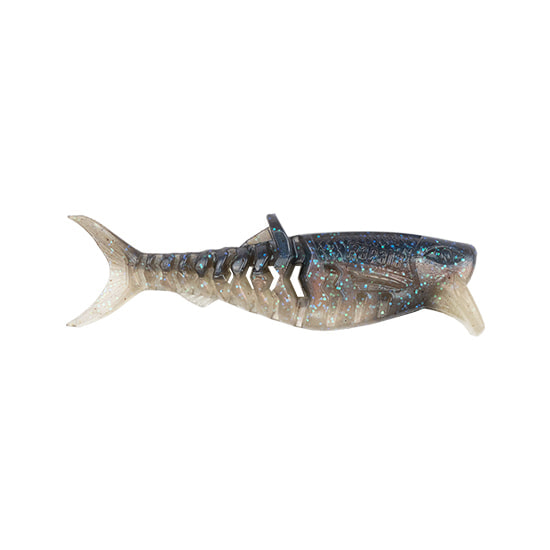
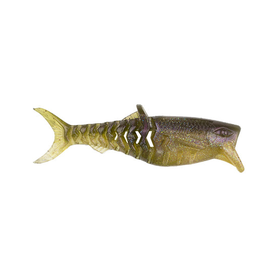
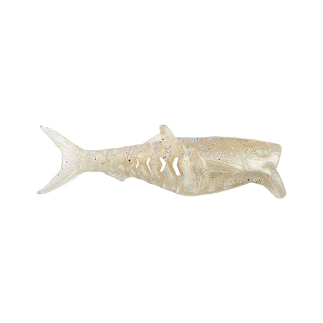
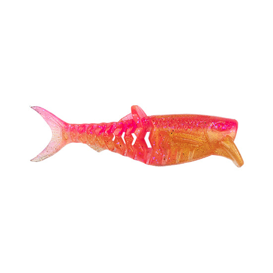
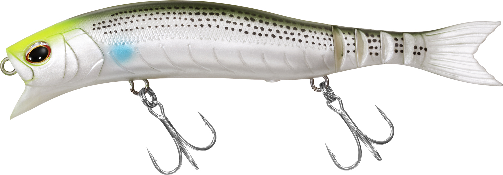

クラッシュシティ インフィルトレイター
（CrushCity Infiltrator）
クラッシュシティ インフィルトレイター（CrushCity Infiltrator）はRapala（ラパラ）のソフトスイムベイトです。
ラパラのソフトベイトブランド「クラッシュシティ」から登場した、リップ付きのスイムベイト。高耐久かつ柔軟なエラストマー素材と、セグメント構造のテールで泳ぎ出しから自然なスイミングを生み出すのが最大の魅力です。

画像出典:ラパラ公式HP
スペック
- メーカー
- Rapala（ラパラ）
- タイプ
- ソフトスイムベイト（エラストマー素材）
- サイズ
- 3インチ／5インチ
- 自重
- 約4.2g（3インチ）／約19.7g（5インチ）
- 入数
- 6本（3インチ）／2本（5インチ）
- ターゲット
- ブラックバス・シーバスなど
▼今すぐチェック

クラッシュシティ インフィルトレイターの特徴
タフなエラストマー素材と、泳ぎ出しから生命感を出すセグメントテール
-
高耐久かつ柔軟なエラストマー素材
長く使い込めるタフさと、生命感のある柔らかな動きを両立したエラストマー素材を採用。一般的なソフトベイトより裂けにくく、魚を掛けても使い続けやすい。
-
セグメント構造のテールで泳ぎ出しから自然なスイミング
テール部にセグメント（節）構造を取り入れ、巻き始めの低速域から自然なスイミングアクションを生み出す。
-
リップとリブで安定した姿勢をキープ
リップとボディ側面に設けたリブが水をしっかり受け止め、安定した姿勢をキープ。巻くだけで泳ぎが破綻しにくい設計になっている。
クラッシュシティ インフィルトレイターの使い方
基本はただ巻き。セグメントテールが巻き始めから泳ぐので、スローリトリーブでじっくり見せるのが基本になる。
3インチはライトなリグで小型ベイトを意識した魚に、5インチはボリュームのあるシルエットで大型魚に。レンジは使うリグとフックで調整し、反応がない時は巻きスピードを変えたりストップを入れたりして変化をつけていきます。
クラッシュシティ インフィルトレイターの得意な状況
ベイトフィッシュを追っている魚に、ナチュラルな泳ぎで口を使わせたい状況が最大の出番。
ハードルアーに反応しないスレた魚に、ソフトベイトならではの柔らかい動きで違和感なく食わせたい場面で選びたい1本です。
ワンポイント
エラストマー素材は一般的な塩ビ系ワームと一緒に保管すると溶けたり変質したりすることがあるため、別のケースで保管するのがオススメです。
セッティングするフックやシンカーの重さでレンジと泳ぎが変わるので、まずはゆっくり巻いて泳ぎを確認してから使いましょう。
インフィルトレイターのサイズの使い分け
| モデル | 自重／入数 | 得意な場面 |
|---|---|---|
| 3インチ（CCINF3） | 約4.2g／6本入り | 小型ベイトパターン・ライトなリグで扱いやすいサイズ |
| 5インチ（CCINF5） | 約19.7g／2本入り | ボリュームのあるシルエットで大型魚を狙うサイズ |
インフィルトレイターは3インチと5インチの2サイズ展開。ベイトのサイズや狙う魚の大きさに合わせてサイズを選ぶのが基本だ。
オススメカラー
クラッシュシティ インフィルトレイターは全9色展開。オススメのカラーを厳選して紹介します。

RS リアルシャッドシャッド系ベイトを再現したリアル系。ベイトを意識した魚に違和感なく見せたい時に。

GH ゴーストヘイズ透け感のあるゴースト系。澄んだ水やスレた状況でシルエットを控えめに見せたい時に。

WB ホワイトベイト視認性の高いホワイト系。濁りやローライトで存在感を出したい時の1色。

PS ピンクサンセットピンク系のアピールカラー。ソルトでも使いやすく、反応を探る時の変化球に。
画像出典:ラパラ公式HP
クラッシュシティ インフィルトレイターに似ているルアー
-

ソフトウェイク150F ダイワ 詳細はこちら＞ソフトボディのフローティングミノー。柔らかい素材で生命感のある動きを出し、スレた魚に口を使わせるという考え方がインフィルトレイターと近い。
-
ソフトハニタス
マドタチ
詳細はこちら＞
全身ソフトルアーで柔らかいボディがナチュラルな水中動作を生む1本。ブラックバスやシーバスをソフトベイトで攻略するという狙いどころが共通する。